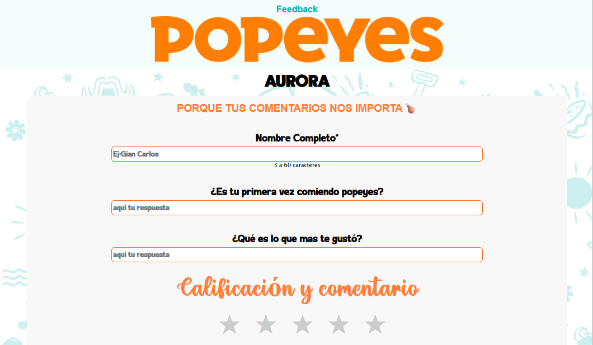
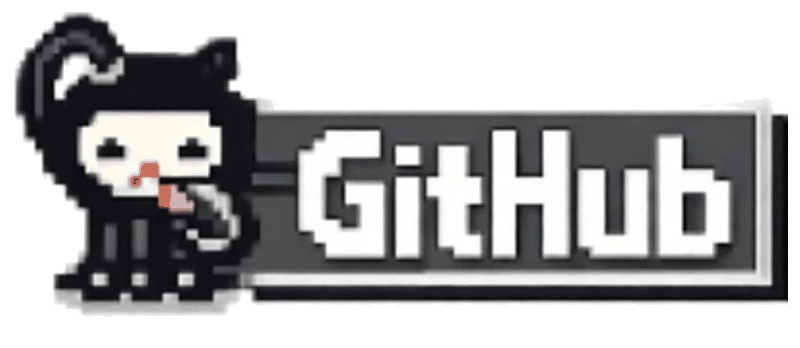
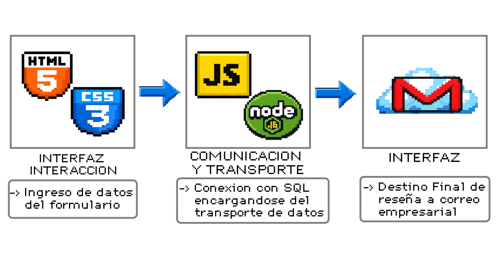
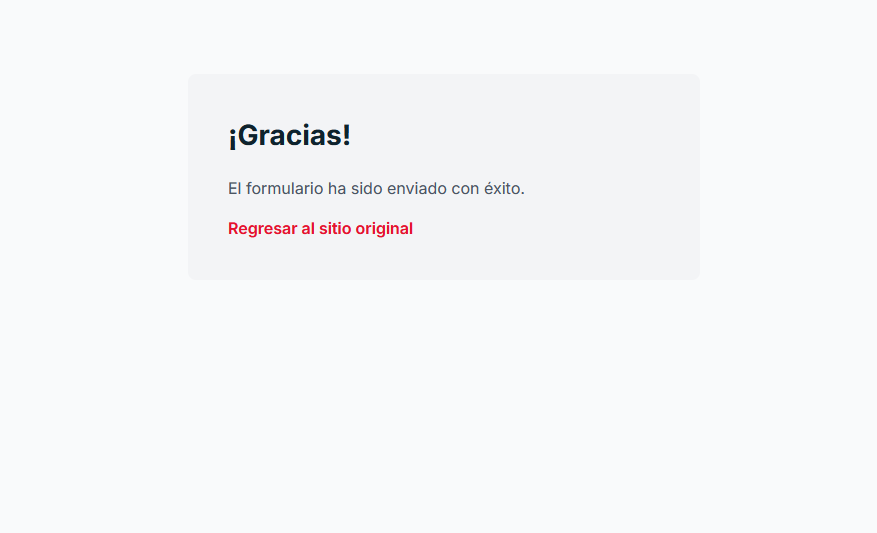
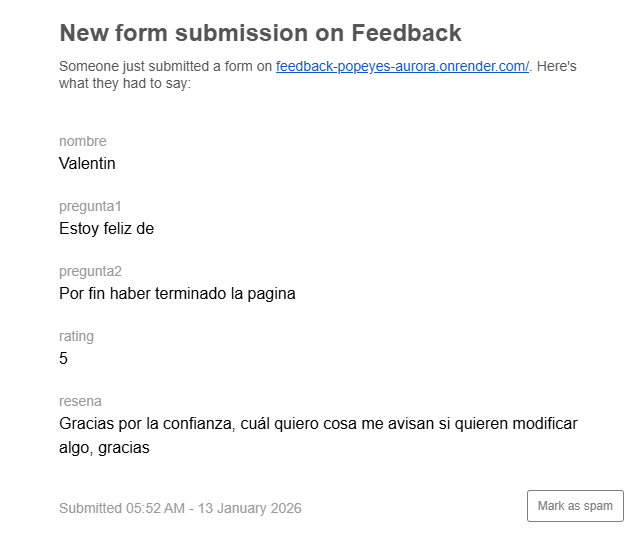
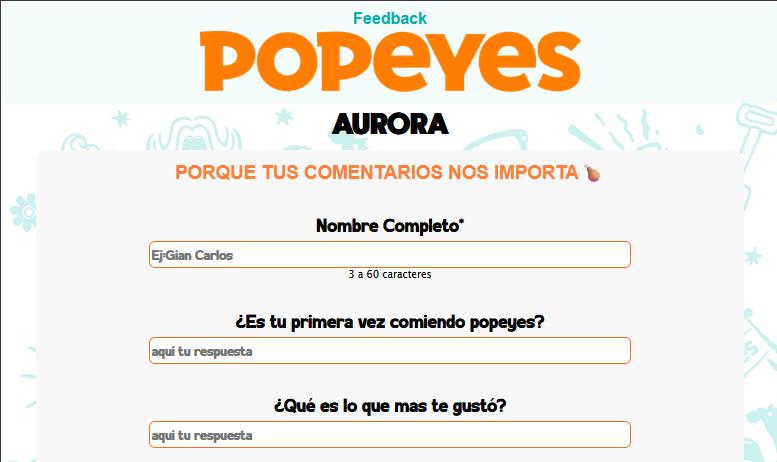
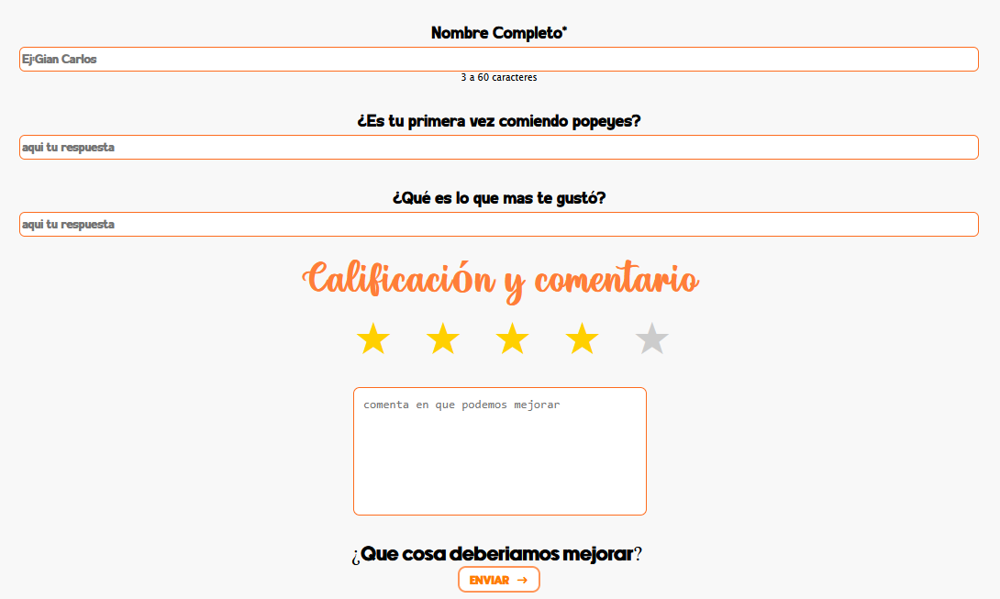
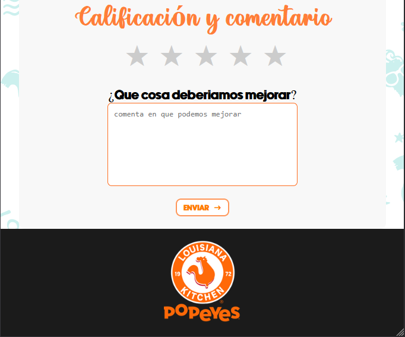
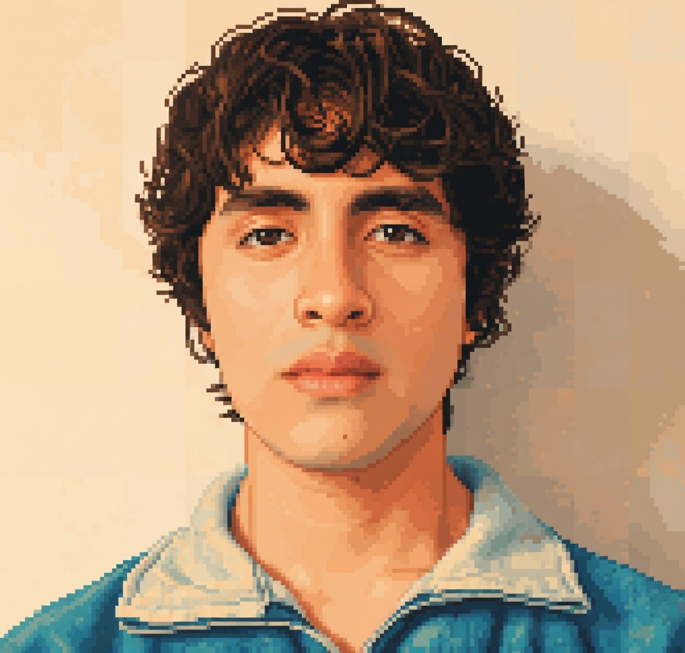

Fecha-15-01-25 / Popeyes
-----------------------

Plataforma web de reseñas para Popeyes, donde los usuarios pueden dejar comentarios, calificaciones y opiniones constructivas sobre la calidad del pollo y la atención al cliente. El objetivo del proyecto es contribuir a la mejora continua del servicio, especialmente con motivo de la apertura de la nueva tienda AURORA.







